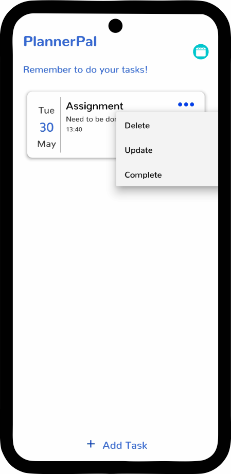

Make Every Minute Count
About
Welcome to Timelapse, a leading company dedicated to helping individuals and businesses make the most of their time. At Timelapse, we understand the challenges that arise from juggling numerous tasks, deadlines, and responsibilities in today's fast-paced world. That's why we're excited to introduce PlannerPal, our innovative time management app designed to empower you to take control of your schedule and achieve peak productivity.
Mission
Empowering individuals and teams to achieve their full potential by providing a powerful productivity app that offers constant motivation and support. Through our commitment to innovation and excellence, we aim to make a positive impact on the lives of our users, helping them achieve their goals and realize their dreams.
Vision
To empower individuals and teams around the world to make the most of their time, by providing a reliable, intuitive, and user-friendly time management app.
Introducing PlannerPal

PlannerPal is your ultimate digital companion, seamlessly blending functionality, simplicity, and efficiency to streamline your daily routines. With its user-friendly interface and powerful features, PlannerPal offers a comprehensive solution to organize, prioritize, and optimize your time like never before. Whether you're a busy professional, a student with a demanding academic schedule, or simply someone seeking to enhance personal productivity, PlannerPal has got you covered.
Our app distinguishes itself by its ability to motivate users with affirmations such as recognizing when they are doing a great job. Its goal is to assist individuals and teams in enhancing their productivity, efficiency, and effectiveness in both their personal and professional lives.
Features
Easy to Navigate
PlannerPal stands out as an app that prioritizes ease of understanding. Its user-friendly layout and intuitive features make organizing tasks and schedules effortless. With readable text and a clear interface, PlannerPal ensures that staying on top of your commitments is a stress-free experience.
Affirmations
PlannerPal offers a unique feature that sets it apart from other task management apps: affirmations after completing tasks. Each time you check off an item, the app rewards you with personalized, uplifting messages. These affirmations serve as a powerful motivator, instilling a sense of accomplishment and encouraging you to stay productive and focused throughout your day.
Calendar
One of the standout features of PlannerPal is its integrated calendar, providing you with a comprehensive view of your scheduled tasks. With this feature, you can easily visualize when your tasks are due and plan your time effectively. The calendar interface is designed to be user-friendly and intuitive, allowing you to effortlessly navigate through different dates and get a clear overview of your commitments. By having a centralized calendar within the app, PlannerPal ensures that you never miss a deadline and stay organized with your tasks and responsibilities.
Add Tasks
PlannerPal excels in its seamless task management feature, making it effortless to add tasks. With its intuitive interface, you can quickly input new tasks with just a few taps. The app streamlines the process by providing customizable options for task details such as due dates, priorities, and categories. Whether you're on the go or sitting at your desk, PlannerPal's easy task creation ensures that you can capture new responsibilities as they arise, preventing anything from slipping through the cracks. Stay organized and stay on top of your to-do list with PlannerPal's convenient and user-friendly task addition feature.
Alarm
PlannerPal offers a reliable and customizable alarm feature to keep you on track and punctual. With the app's built-in alarm functionality, you can set reminders for important tasks, deadlines, or events.
Edit Tasks
PlannerPal empowers users with the flexibility to easily edit their tasks, ensuring that plans can be adjusted seamlessly. With just a few taps, you can modify task details such as due dates, priorities, descriptions, or categories. Whether you need to reschedule a task, update its status, or add additional notes, PlannerPal's intuitive interface allows for effortless editing.
Contact Us
Got any questions? Contact us with our information below.
Email:
timelapsecorpp@gmail.com